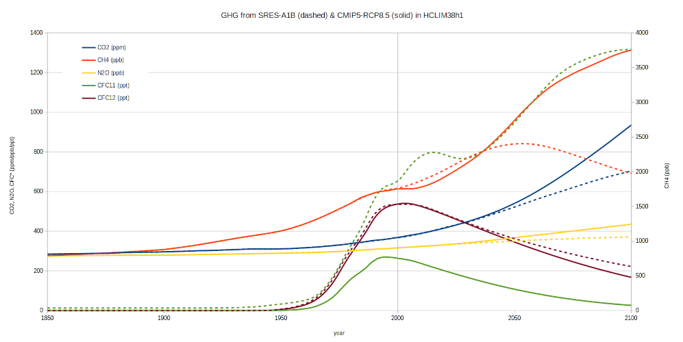

Greenhouse Gas and Solar Irradiance Scenarios
Harmonie & HCLIM use 6 greenhouse gases (GHG): CO2, CH4, O3, CFC11, CFC12 and N2O. In the default setup, the GHG concentrations are updated at every radiation time step by routine updrgas, but only to the nearest month. In this routine annual, global mean concentrations are given for CO2, CH4, N2O, CFC11, CFC12. For NO2 a fixed concentration is set. In the standard setup concentrations are hard-coded for the SRES scenarios in updrgas. CMIP5 scenarios can be read from text files. Climatologies (N latitude=64, N level=91, N month=12) are read from (big-endian) binary files from const/rrtm_const. In CY48, GHG climatology and CMIP3, CMIP5 & CMIP6 historical and scenarios, as well as CMIP6 solar irradiance are read from netcdf files. This has been backported to HCLIM43 & HCLIM46. The netcdf files were made available by Robin Hogan (ECMWF) on https://confluence.ecmwf.int/display/ECRAD:
- GHG climatology:
greenhouse_gas_climatology_46r1.nc - CMIP3, CMIP5, CMIP6 GHG scenarios:
greenhouse_gas_timeseries_CMIP.zip - solar irradiance:
total_solar_irradiance_CMIP6_47r1.nc
The GHG climatology for CO2, CH4 and O3 have been updated from MACC or CAMS (O3), all others are from Cariolle. The climatology GHG fields are read, but currently are not used in our default setup (RAYFM radiation scheme).

Some relevant variables
| variable | default in code | in namelist | comment |
|---|---|---|---|
LHGHG | T | T | LOGICAL : .T. IF VARIABILITY OF GREENHOUSE GASES (INCLUDING CO2) IS ON; N.B.: LHGHG supercedes LECO2VAR and allows using better specification of trace gases |
LECO2VAR | T | - | Superseded by LHGHG; LOGICAL: .T. IF ERA-40/AMIP2 VARIABILITY OF GHG IS ON. |
NO3CMIP | 0 | not set | INT : Controls time-varying CMIP ozone forcing (0=no time-varying ozone, 5=Read CMIP5 time-varying ozone, 6=Read CMIP6 time-varying ozone) |
NGHGCMIP | 0/6 | 6 | INT : Controls time-varying CMIP ghg forcing (0=Use default IFS GHG data, 5=Read CMIP5 GHG data, 6=Read CMIP6 GHG data). Replaces and extends LGHGCMIP5. |
NSCEN | 1 | 1 | INT : if NGHGCMIP=0: 21st century scenario for GHG from CMIP3/SRES:1=A1B, 2=A2, 3=B1 |
NRCP | 3 | 3 | INT : If NGHGCMIP=5/6: NRCP specifies the Representative Concentration Pathway (RCP) in CMIP5:1=RCP 3-PD, 2=RCP 4.5, 3=RCP 6.0, 4=RCP 8.5; or the equivalent Shared Socio-economic Pathway (SSP) in CMIP6: 1=SSP126, 2=SSP245, 3=SSP370, 4=SSP585 |
NCMIPFIXYR | -1 | not set | INT : Positive values used to fix CMIP forcings at specified year |
GHGDATADIR | "./" | not set | CHAR : Directory containing CMIP ghg data file. In HCLIM the files are linked from the RAD_DATA_PATH directory specified in Env_system. |
CGHGCLIMFILE | greenhouse_gas_climatology_46r1.nc | not set | CHAR : Location of greenhouse gas climatology file, or empty if the default is to be used. |
CGHGTIMESERIESFILE | derived | not set | CHAR : Location of greenhouse gas timeseries file, or empty if it is to be worked out from the NSCEN, YOECMIP%NGHGCMIP and YOECMIP%NRCP variables. |
LETRACGMS | .TRUE. | not set | LOGICAL: F=Cariolle climatol. T=GEMS-derived clim for CO2, CH4, O3. No longer applicable in cy48 (always TRUE) |
NOZOCL | 1 | AROME: 2; ALADIN: not set | set to 2 in AROME namelist; choice of ozone climatology (?). In apl_arome, SUOZON is called if NOZOCL=2; RADOZC is called if NOZOCL=1. In aplpar, RADOZCMF is called if (LO3FL).AND.(NOZOCL == 1).AND.(LRAYFM), SUOZON is called as last else. |
LO3FL | .FALSE. | AROME: not set; ALADIN:.TRUE. | Set to TRUE in ALADIN namelist; CLE D'ACTIVATION OZONE CLIMATOLOGIQUE (FORTUIN LANGEMATZ) |
LO3ABC | .FALSE. | .TRUE. | Switch to use climatological profile (SURFA.OF.OZONE, SURFB.OF.OZONE, SURFC.OF.OZONE in 1st of month’s boundary file) |
CO3DATADIR | "./" | not set | CHAR : Directory containing CMIP ozone data file |
CO3DATAFIL | 'not set' | not set | CHAR : Name of CMIP ozone data file (see suecozv.F90) |
NRADFR | 900/TSTEP | AROME: 900/TSTEP; ALADIN: -1 | INT : FREQUENCY OF FULL RADIATION COMPUTATIONS |
CSOLARDATA | not set | Not used in CY48, see CSOLARIRRADIANCEFILE; CHAR : File containing TSI data used with NHINCSOL=4 | |
NHINCSOL | 0/4 | not set | INT : 0: Total Solar Irradiance (TSI) fixed at 1366.0 W m-2, 4: TSI from CMIP6 NetCDF (default), or override with CSOLARIRRADIANCEFILE |
CSOLARIRRADIANCEFILE | total_solar_irradiance_CMIP6_47r1.nc | CHAR : Location of Total Solar Irradiance file, or empty if the default is to be used. |
If CGHGCLIMFILE, CGHGTIMESERIESFILE or CSOLARIRRADIANCEFILE file paths start with . or /, they are used directly as provided, otherwise they are prefixed with the path from environment variable DATA, if set. In Env_submit files RAD_DATA_PATH has been added to point to the directory with the netcdf files.
Effect of changes
Switching from hard-coded GHGs to GHGs from netcdf has an effect on the model results when using the same scenario (A1B), but is neutral over longer periods for the complete domain. There are 3 reason:
- Time interpolation annual values different: in cy43 hard-coded setup interpolation is per month, in the cy48 netcdf setup it is interpolated to the nearest day.
- Treatment of CCL4 and HCFC22: hard-coded to 0 in cy43, in cy48 read from netcdf (not equal to 0). Note that in cy48 for the CMIP6 scenarios, the *CFC11equiv_47r1.nc that are read lack these 2 GHG's so they are 0 again.
- Small differences in constants in code: some constants were hard-coded in updrgas, but are now calculated from other constants, which gives minor differences.